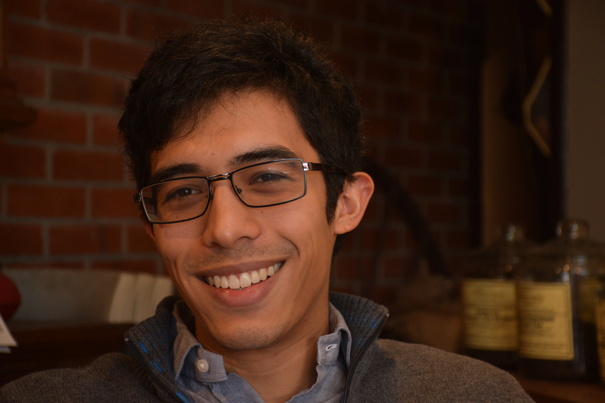
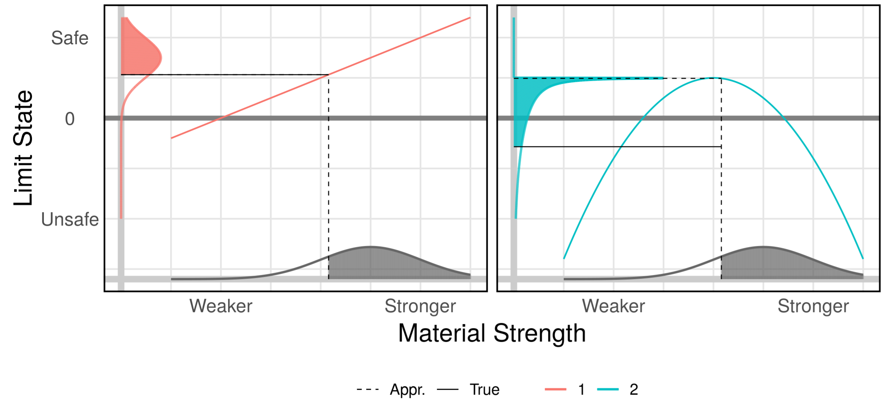
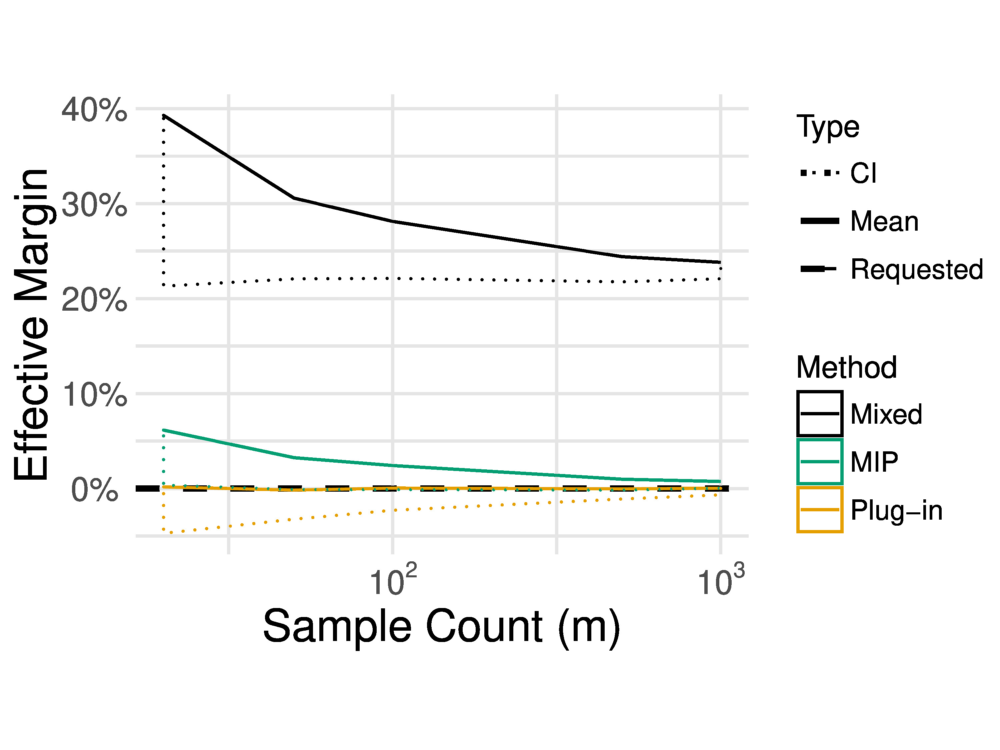
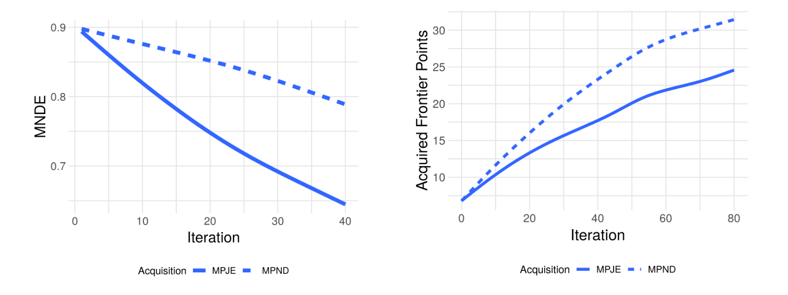
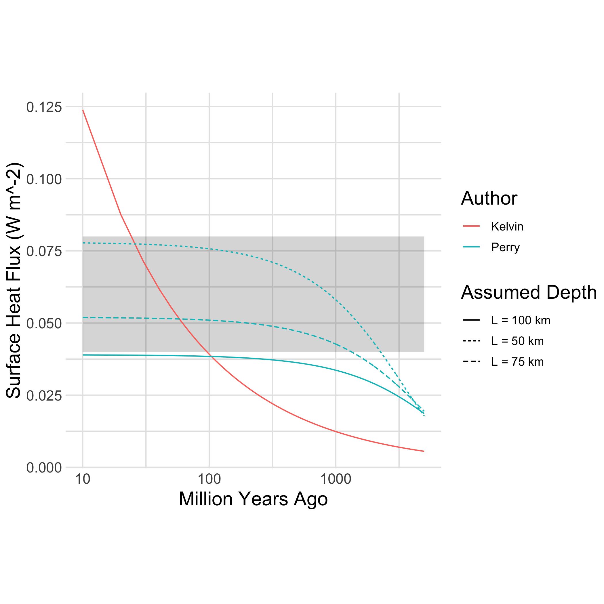
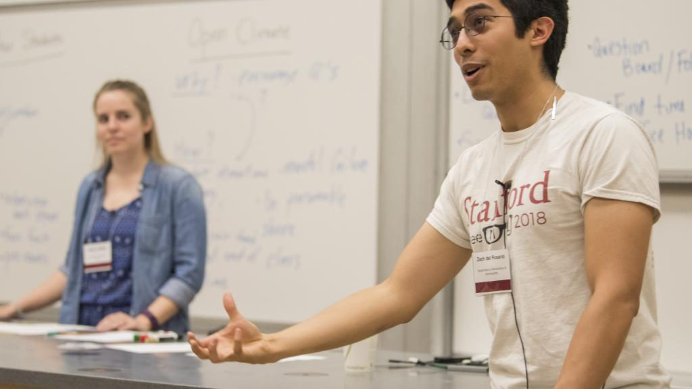
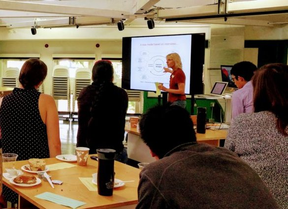
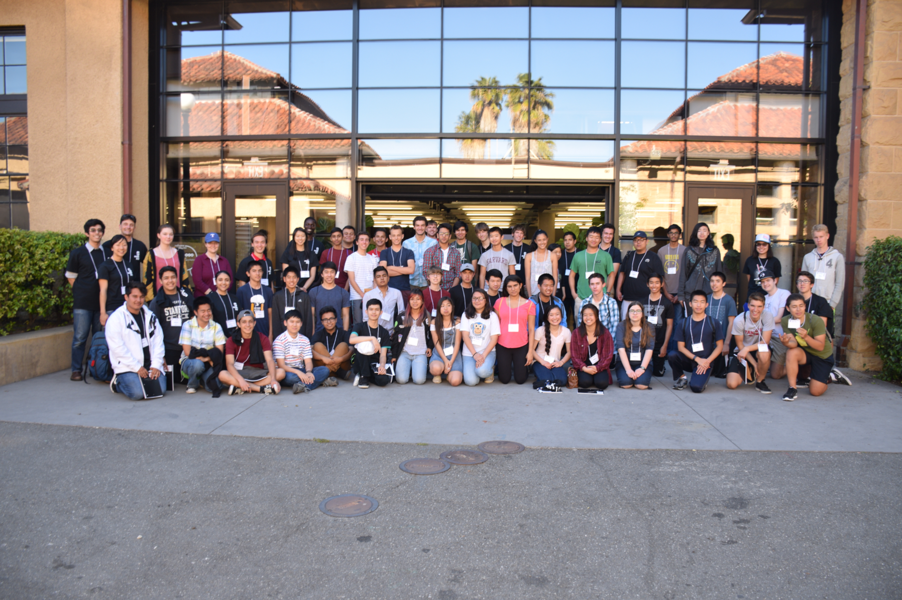
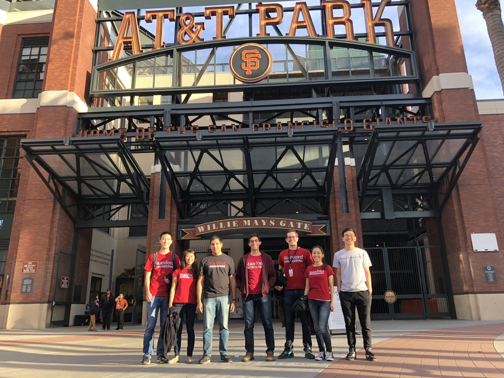
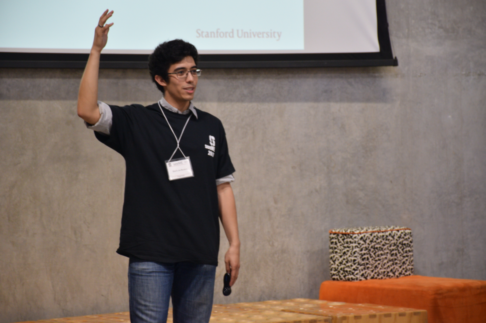

Zach del Rosario
Table of Contents
1 Hello!
I'm an Engineering PhD candidate at Stanford's Aeronautics and Astronautics department.

Figure 1: Hi! This is what I look like.
Quick info:
| Extended CV | This website! |
| Traditional CV | This link |
| zdrcrow@stanford.edu | |
| (Remove corvids if you're not a robot) | |
| Likes | Absurdist British comedy |
| Dislikes | Awful Christmas music |
| Mission | Managing uncertainty |
2 Mission and Skills
I believe false certainty is one of the greatest challenges we face in the 21st century. False certainty contributed to voter complacency in the 2016 election. Citing a lack of certainty is the favorite tactic of climate change deniers. In my own work, I have found that the reification of variable material properties in Engineers' minds has lead to undiagnosed vulnerabilities in the aircraft design process.
Generally, people tend to seek absolute knowledge where it does not exist, closing themselves off from the possibility of learning. My research, teaching, and service are all connected to the same goal—helping us manage uncertainty.
I have a unique blend of skills that I leverage in my work:
2.1 Human-centered Engineering
I first trained as a mechanical engineer at Olin College of Engineering, whose curriculum emphasizes a people-first approach to problem solving. There I developed the tools and mindset to identify and frame human problems—a skillset I carried to my graduate studies. At Stanford I am completing a PhD in Aerospace Engineering under the supervision of Gianluca Iaccarino and Art Owen. My mix of interviewing skills and statistical literacy enabled me to elicit problems from engineers while interning at Northrop Grumman Corp., which directly led to my work on principled margin.
2.2 Statistics and Data Science
While at Stanford, I've had the great fortune to learn from classical statisticians (Art Owen) and data scientists (Hadley Wickham). I'm an alum of the Data Challenge Lab, and I incorporate statistics and data science in my research, teaching, and service. My graduate training in statistics has enabled me to pursue a rigorous treatment of uncertainty in my work on principled margin, and my training in data science and visualization has influenced my work on data science for analysis and decisions.
2.3 Pedagogy
I have also pursued formal training in teaching at Stanford. I had the great fortune to learn from Sheri Sheppard, both through her class on course design (ENGR 312), and through collaborating on ASEE Stanford Chapter events. I was recognized by Stanford VPTL for my teaching abilities, and was hired as a teaching consultant in the autumn of 2018.
3 Research
I am interested in how information—in a broad sense—flows through the engineering design process. Modern advances in data collection, computation, and algorithms have opened the door to new ways to find engineering and scientific insights. These developments enable new approaches to old engineering problems, and promise increased efficiency and safety. The following are major themes of my research:
3.1 Principled Margin for Aircraft Design
Engineers design safe solutions for human needs. Designers achieve safety in part through engineering margins—essentially 'padding' in the quantitative values used for design. If you've ever put aside money for a rainy day, you're not just fiscally responsible—you've built margin into your finances! My work on principled margin is focused on deriving data-driven engineering margins with provable properties.
3.1.1 A Dangerous, Reified Mindset
Gould tied the notion of reification, "the mental conversion of a person or abstract concept into a thing," to failed statistical reasoning. Pilkey and Pilkey-Jarvis tie this fallacy to dramatic failures in environmental science. They quote Gould to illustrate the key issue,
"We abstract the variation within a system into some measure of central tendency like the mean value and then make the mistake of reifying this abstraction and interpreting the mean as a concrete thing."
Engineers also commit this reification in considering material properties as simple, single numbers to be plugged into models. In my PhD thesis, I worked to articulate the failure modes of these reification errors in the context of aircraft structural design, and developed provably safe alternatives.

Figure 2: Widely-used aircraft design strategies have fundamental flaws. The use of basis values—conservative, reified material properties—can lead to a misleading safe diagnosis of structures. Note that the `Apprx.` Limit State value using a basis value indicates a safe structure for `2`, while the `True` value is unsafe. This and other issues in aircraft design arise from a reified view of material properties, and require a more rigorous approach to guarantee aircraft safety.
3.1.2 A Provably Safer Approach
Rigorously treating uncertainties in science and engineering is the study of uncertainty quantification (UQ). As a researcher in UQ, I use a combination of domain knowledge of aircraft design and rigorous statistics to solve engineering problems. I have developed alternatives to traditional structural design criteria which possess provable safety properties. These approaches are data-informed to add a rigorous amount of design margin.

Figure 3: Provably-conservative margins enable a user-selected safety level. Example results from "Cutting the Double Loop"; my novel margin in probability (MIP) approach is provably-conservative, leading to quantifiable properties in the resulting design.
3.1.3 Selected Publications
- "Cutting the Double Loop: Theory and Algorithms for Reliability-Based Design Optimization with Statistical Uncertainty": In this work, I introduce a framework for analyzing and formulating rigorous design margins for engineering design under uncertainty. I derive a number of constructs, including margin in probability (MIP), which possesses provable safety properties that satisfy current FAA Regulations.
- "Fast Precision Margin with the First-Order Reliability Method": In this work, I further develop the techniques introduced in "Cutting the Double Loop", and introduce algorithmic advances to enable fast computation of precision margin. With my collaborator Rick Fenrich, we demonstrate these techniques on the design of a complex, multi-physics supersonic nozzle.
- "Margin as Model: Some Answers to "How Many Tests Should I Perform?"": In this work, I apply principled margins to support various engineering design questions, including the optimal allocation of a test budget for materials characterization.
- "When are Design Allowables Conservative?" (To be presented at AIAA SciTech 2020): In this work, I analyze the design allowables framework—the current aircraft design criteria for handling uncertain material properties—in terms of aircraft safety. The current criteria are safe but inefficient for simple structures, but grow increasingly dangerous for more advanced, modern designs. My work on Principled Margin—MIP and other constructs—provably solves these issues.
3.2 Data Science for Analysis and Decisions
Scientists and engineers need to carry out analyses and make decisions. Data science tools have the potential to support these activities, but interpreting data requires reasoning under uncertainty. I have worked on projects in a variety of different areas, but these efforts have a common thread: Managing uncertainty to support analysis and decisions.
Selected Publications:
- "Assessing the Frontier: Active Learning, Model Accuracy, and Multi-objective Materials Discovery and Optimization": With colleagues at Citrine Informatics, I probed the relation between machine learning model accuracy and suitability for guiding experimental choices in materials science. Simple intuition would suggest that a more accurate model would give better suggestions; however, this perspective misses some important details. I use and build upon concepts from multi-objective optimization to construct accuracy measures more closely related with experimental utility.

Figure 4: The best model for accuracy is not necessarily the best for proposing new materials. Mean non-dimensional error (left) is a measure of accuracy; the Acquisition strategy MPJE achieves better accuracy than the MPND approach. However, the less-accurate MPND approach leads to a greater number of proposed material candidates that are optimal "frontier" points (right).
- "Lurking Variable Detection via Dimensional Analysis": In this work, I introduce techniques to detect unknown unknowns, so-called lurking variables. These techniques are based on classical ideas of dimensional analysis—the idea that physical phenomena are ultimately independent of human-defined measurement systems. I re-interpret this classic insight in a modern context to enable lurking variable detection.
- "Developing Design Insight Through Active Subspaces": In this award-winning paper (Jefferson Goblet, AIAA SciTech 2017), I demonstrate the use of modern model-reduction techniques to gain qualitative insights into engineering systems. For instance, I show that one can recover classical insights into aircraft design through an automated, data-driven approach.
4 Teaching
I have taught in a number of different contexts and for diverse audiences. This section collects details about my teaching experiences.
4.2 ME 470: Uncertainty Quantification
In the Spring of 2019 I designed and taught the Stanford course ME 470: Uncertainty Quantification (UQ). I designed this class partly as an introduction to the methods, but primarily as an introduction to the mindset of how to manage uncertainty.

Figure 5: Modeling choices tend to have far greater impact than parametric choices on an analysis. Visual comparison of Lord Kelvin's and John Perry's analyses of earth cooling, both used to estimate the age of the earth. Note that while parametric changes (different values of L) in Perry's analysis shift the blue curves, there is a qualitative difference in predictions between the Kelvin and Perry models. While much attention in UQ is placed on dealing with parametric issues, modeling choices tend to dominate behavior: This was a key lesson in ME 470. Figure reproduced from GSA Today article by England, Molnar, and Richter.
As an illustration, we started the first day with a hands-on exercise studying Lord Kelvin's (incorrect!) estimation of the age of the earth. Through this exercise, students identified potential sources of model-form uncertainty—errors in the posed equations used to describe a physical system. Students also practiced determining what information would be necessary to improve an analysis. Through this and similar exercises, students in ME 470 learned not just the mathematics to carry out UQ, but also the investigative mindset needed to manage uncertainty.
For more information, here's the syllabus.
4.3 VPTL Teaching Consultant
I have been a Teaching Consultant with the Office of the Vice Provost for Teaching and Learning (VPTL) since the Autumn of 2018. As a consultant, I have been recognized for my teaching skills, and leverage these abilities to train my peers. Through VPTL I provide a variety of professional-development services and workshops to other Stanford graduate students, aimed at helping them improve their teaching skills. I leverage a combination of in-class experience and knowledge of the education literature in these consultations, and strive to help folks recognize and develop their unique teaching style.

Figure 6: Facilitating a workshop at Stanford's TA Orientation.
5 Service
5.1 ASEE Stanford Chapter President
I have been involved with the American Society for Engineering Education (ASEE), Stanford Chapter since 2016. Now I serve as the chapter president, organizing our portfolio of events with our officer team. My goal as president has been to build a robust community of educators at Stanford, providing a network for those students, staff, and faculty who are passionate about education.
Stanford ASEE offers a seminar sequence and annual colloquium. During my work with the chapter, we produced the 2018 Colloquium on Education at Scale, which examined the modern challenges and opportunities of scale, and the 2019 Colloquium on The Fundamentals of Teaching, where participants learned the key skills for effective pedagogy through interactive workshops. We also introduced a journal club, which allows members to dig more deeply into the education literature, and connect with fellow educators.

Figure 7: ASEE Breakfast Chat featuring Prof. Sheri Sheppard.
5.2 SeeME co-Founder and Director of Curriculum
With my labmate Ohi Dibua, I founded SeeME in the fall of 2016. SeeME is an outreach program hosted by Stanford Mechanical Engineering which seeks to 1. Get kids from traditionally underrepresented backgrounds excited about science and engineering, and 2. Equip Stanford graduate students with teaching and speaking skills. Our inaugural event was well-received, and garnered support from both the department and the university at large.
5.2.1 Outreach Activities
Currently, SeeME runs an annual outreach event. We bring roughly 50 middle- and high-school aged students to Stanford's campus through program-sponsored transportation, in order for attendees to take part in graduate-student led courses on engineering topics. Past classes have covered bird flight, autonomous cars, mathematical modeling for disease control, and many other topics. Our program was founded specifically to reach traditionally underrepresented groups, and we are constantly striving to improve our efforts.

Figure 8: SeeME team and students, 2017.
More recently we have taken SeeME on the road. We brought a fluid mechanics demo to the Bay Area Science Festival in November of 2018. This was an excellent chance to introduce flow visualization to young kids, get them thinking about fluid mechanics in the air around them, and advertise our annual event. We are currently working to expand SeeME's offerings, in order to achieve a more sustained impact on our broader community.

Figure 9: SeeME at the Bay Area Science Festival, 2018.
5.2.2 Personal Contribution
My specific contributions to SeeME have been in spearheading its founding, helping to define its mission and establishing it as a supported part of the Mechanical Engineering Department at Stanford.
Today I serve as SeeME's Director of Curriculum: My job is to ensure SeeME executes on goal 2: Equip Stanford graduate students with teaching and speaking skills. I do this by leveraging my experience and contacts as a VPTL teaching consultant, organizing workshops to train our teachers and provide them guidance on course design—a task many of them have never done before. I also organize our annual 'dress rehearsal', which gives our teachers a chance to practice their course, and gain targeted, timely feedback. I am also involved with with the miscellaneous tasks needed to make SeeME happen; I often take part in our annual event's opening ceremony with my "Engineering is for Everyone" activity.

Figure 10: Leading my "Engineering is for Everyone" activity at SeeMe 2017.